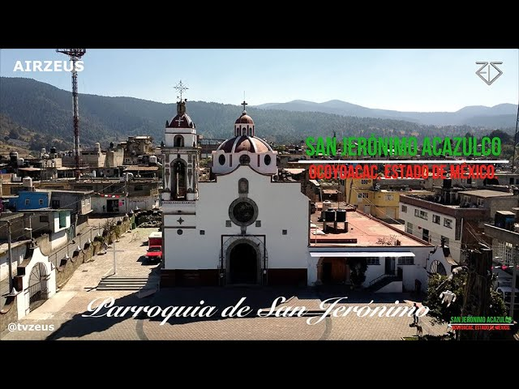

Conoce San Jerónimo Acazulco
Nuestra comunidad San Jerónimo Acazulco esta ubicada en el
municipio de Ocoyoacac en el EDO. de México y esta entre
los pueblos más poblados del municipio teniendo el lugar
número 3 con una población de al rededor de 5,245 habitantes.
Se conoce que el nombre es por: San Jerónimo: que es el
santo patrono del pueblo, Acazulco; de fiacatl, caña; zóltic,
casa vieja; co, lugar, Zóltic también se toma como cosa vieja.
"Antiguos cañaverales", "Lugar de casas de carrizos", "Lugar
de cañas o casas de caña o carrizo", "Donde hay carrizos",
"Lugar de gramíneas que crecen cerca del agua", "Donde hay
cañas, carrizos y tíxpuris o ídolos de barro cocido, y se
asocian los hombres con las nubes y con los dioses".
Sus principales festividades son en los meses de Enero,
Julio y Septiembre y su tradicional danza es la danza de los arrieros.
Gran mayoría de la poblacion se dedica a la agricultuda y
su ingreso se basa en el trabajo en la zona turistica de la
Marquesa, ya que son terrenos comunales y ejidales.
